记录爱搭衣橱界面的逐项变化，作为后续持续追加的变更台账。更新日期：2026-11-04。截图来自本地 App H5及独立引导预览，使用手机或桌面模拟视口；红圈标记本条修改位置。账号、签到和历史数据均为模拟，不包含真实用户资料；前后图按条目标注，补拍另行说明。
持续维护：先拍修改前并圈出目标，登记待实现需求，再改代码，最后补修改后截图与验证；后续每改一处，同轮追加对应记录与截图；同一功能的过程调整合并为最终条目，不单列中间方案；删除冗余项后连续编号。
2026-11-04 · 本地已实现
修改前：首页右上角没有城市定位入口。
修改后：首页右上角增加定位图标和城市名称；未选城市显示「定位城市」。点击后复用定位、城市确认和手动选城流程。
验证与边界：仅点击后请求定位；拒绝或超时保留手动选城，不自动发送对话。
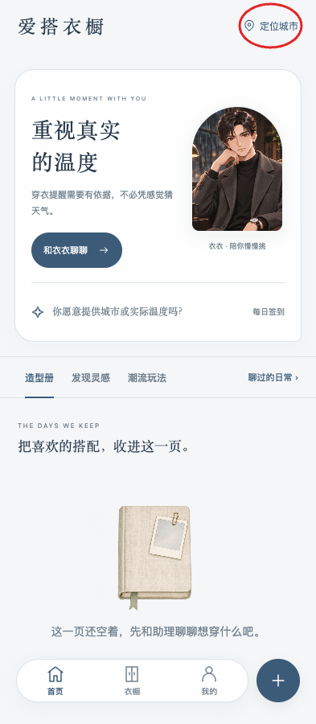
2026-11-04 · 本地已实现
修改前：用户反馈签到按钮没有贴齐所在行右侧。
修改后：「每日签到」和「已签到」均固定右对齐，保持原签到入口。
验证与边界：320、393、1440px两种状态的按钮右边缘与所在行一致；两种状态均使用模拟数据展示。
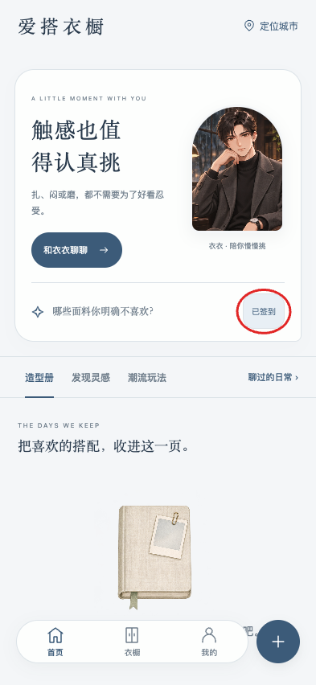
2026-11-04 · 本地已实现
修改前：页面品牌为「衣间」。
修改后：所有原品牌文字统一为「爱搭衣橱」，同步页面标题、登录引导、提示及无障碍名称。
验证与边界：助理昵称「衣衣」保留；技术路径与design=yijian保留兼容；历史截图内文字未重绘。320、393、1440px首页品牌与城市入口无重叠。
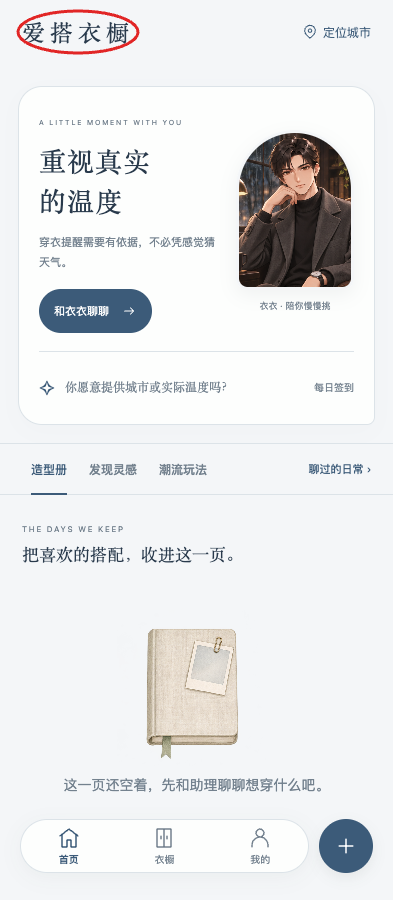
2026-11-04 · 本地已实现
修改前：首页入口显示「聊天记录」。
修改后：首页入口改为「聊过的日常」。
验证与边界：保留原历史查询和会话恢复入口，无障碍名称同步更新。
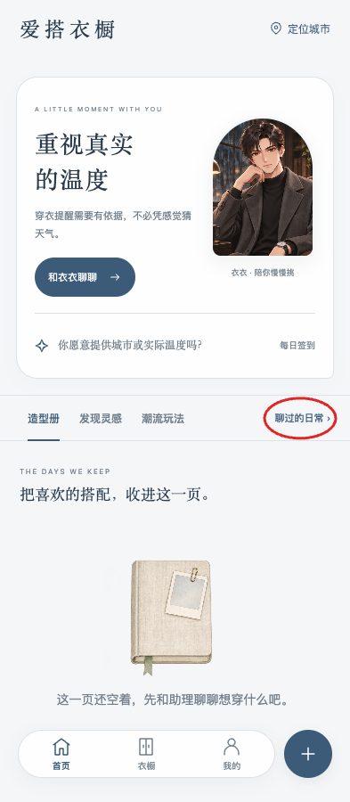
2026-11-04 · 本地已实现
修改前：历史弹窗标题及相关提示为「历史对话」。
修改后：弹窗标题、相关入口提示、无障碍名称及加载／空态中的原文案统一为「聊过的日常」。
验证与边界：独立Agent和App共用文案已同步；截图为模拟账号的空列表。
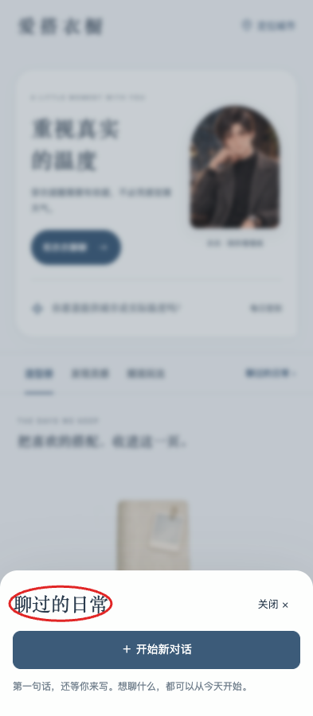
2026-11-04 · 本地已实现
修改前：「我的试穿形象」标题下显示「已创建」。
修改后：删除已创建状态文字及占位，保留说明和查看入口。
验证与边界：Chrome模拟已创建状态确认文字清空且状态行隐藏；未创建提示仍可见。使用项目角色素材代替私人形象，前图为恢复原代码后的补拍，红圈标注「已创建」；后图展示删除效果，不圈说明文字。
修改前（恢复原状态补拍）
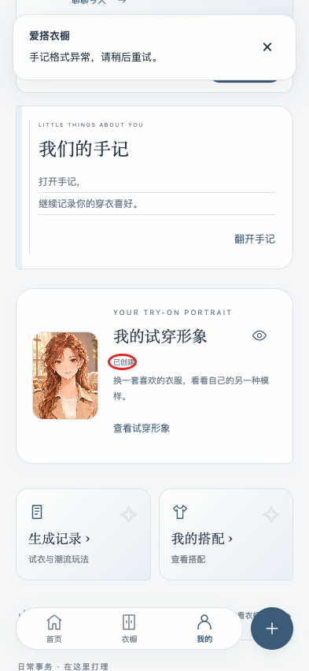
修改后
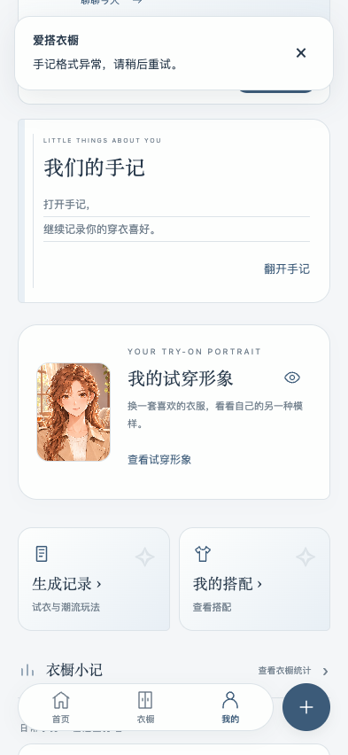
2026-11-04 · 本地已实现；先截图、登记，再修改并补后图
修改前：和伙伴直接聊聊。目标文案：和我直接聊一聊。仅修改按钮标题，保留原聊天及保存流程。
修改前
修改后（Chrome预览文案及红圈核对通过）
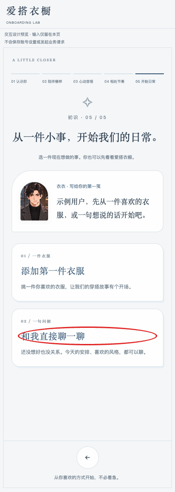
已同步清理正文顶部遗留8px margin，正文margin为0，卡片padding保留；320／393／1440px检查通过。
2026-11-04 · 本地已实现，五步核对通过
修改前：对话卡展示「衣衣／助手昵称」及引导语。
修改后：仅删除昵称small元素，保留对话卡和每步原引导语，其余不变。
前图为恢复昵称元素后的补拍，红圈仅标注昵称；后图为当前实际页面。Chrome五步均确认对话卡及正文存在，昵称元素不存在；无真实账号保存。
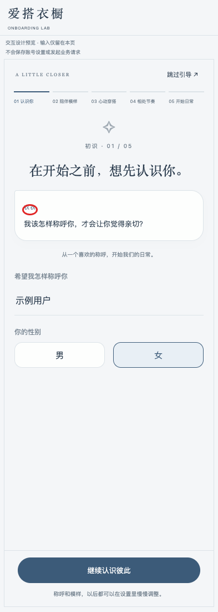
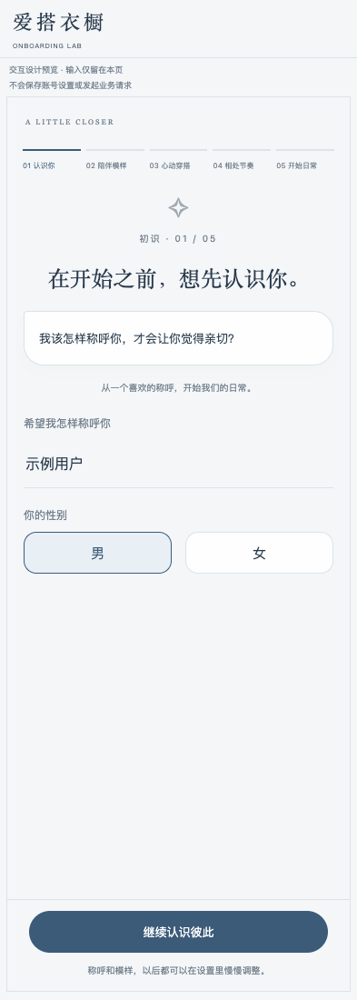
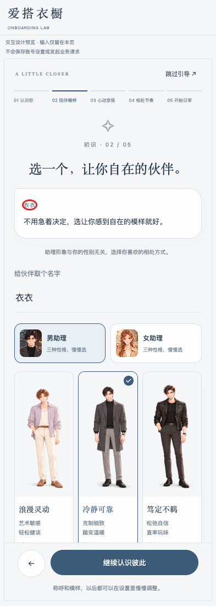
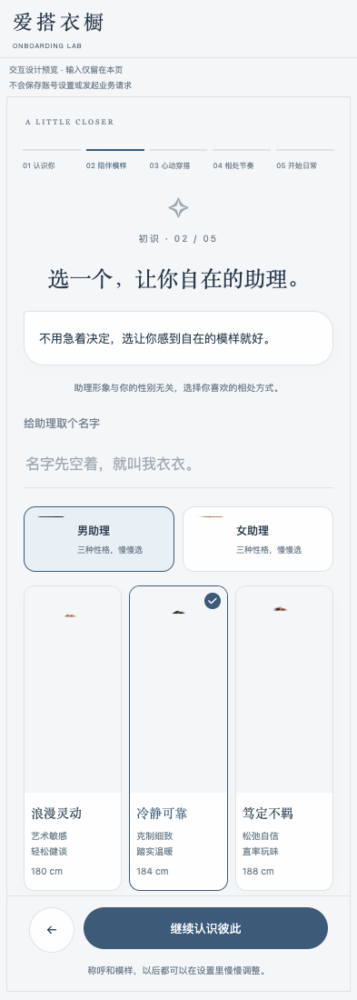
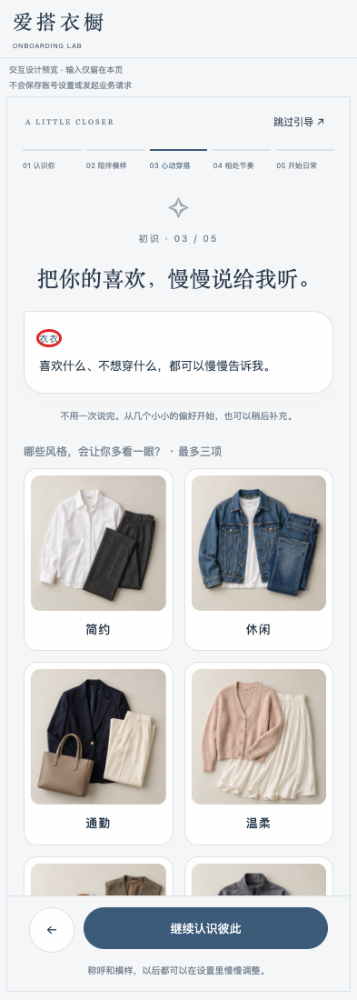
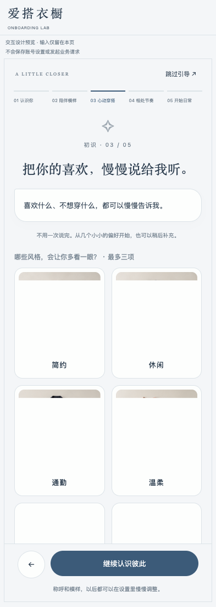
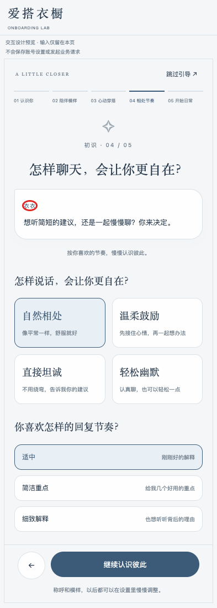
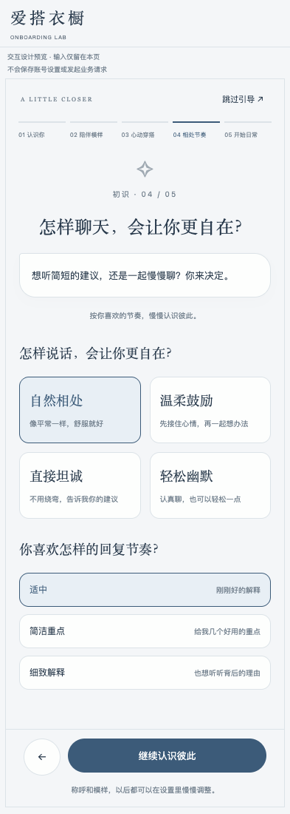
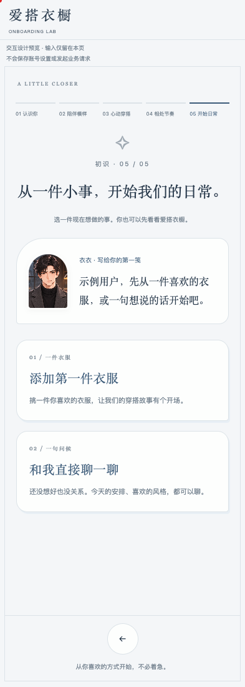
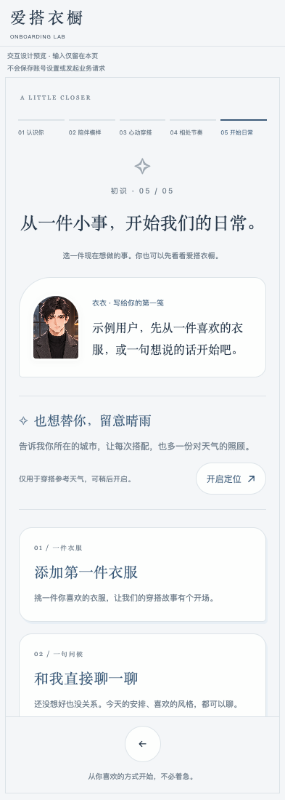
2026-11-04 · 六种当前状态截图已完成
补充当前H5 Onboarding的定位反馈截图，不修改产品代码。截图使用393×1100视口、示例资料、模拟浏览器定位与模拟城市解析；不使用真实账号或真实GPS，不展示真实系统权限弹窗，也不是iOS原生截图。系统允许定位、拿到位置、城市确认是不同阶段，只有城市确认后才保存本次选择。
当前确认城市后按钮仍显示「开启定位」；此前建议的「已开启 · 城市」按钮尚未实现。iOS Onboarding对应状态尚未同步，本节仅记录H5模拟证据。
页面反馈：仅用于穿搭参考天气，可稍后开启。
进入第五步时不会请求定位。红圈标注唯一的「开启定位」按钮。
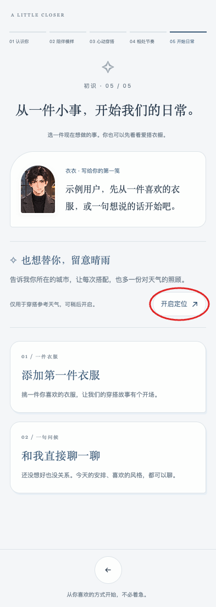
页面反馈：请允许访问位置；不想开启也可以手动选择城市。
点击后请求浏览器定位，等待定位回调。当前页面不单独展示「权限已允许」状态；此图是应用内等待状态，不是系统权限弹窗。
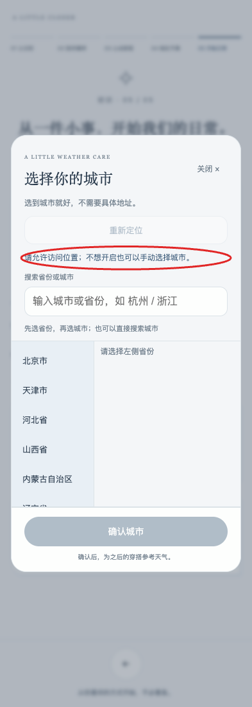
页面反馈：找到上海市啦，请确认后使用。
已收到模拟坐标并完成模拟城市解析，此时尚未保存城市；点击「确认城市」才使用。
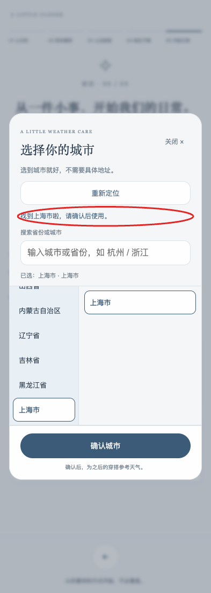
页面反馈：已选择上海市，之后的穿搭会按需参考这里的天气。
用户确认后关闭弹窗、保存城市到当前会话并更新小笺反馈。当前按钮仍为「开启定位」，用于再次定位；「已开启 · 城市」仅是此前建议，尚未实现。
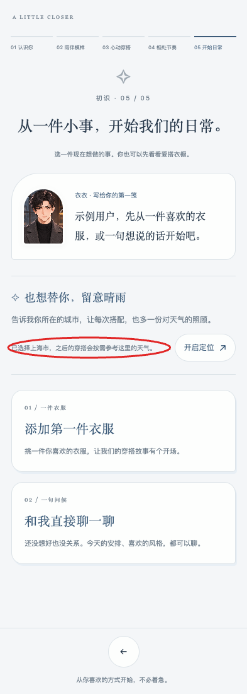
页面反馈：定位未开启也没关系，手动选一座城市吧。
拒绝定位不阻挡使用，可以在弹窗手动选城或关闭。
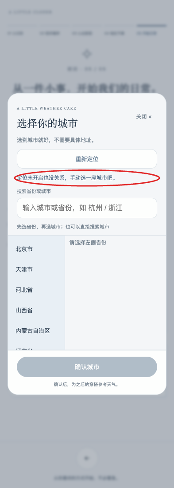
页面反馈：定位等得有点久，可以再试一次，或手动选择。
可重新定位、手动选城或关闭；超时不显示定位成功。
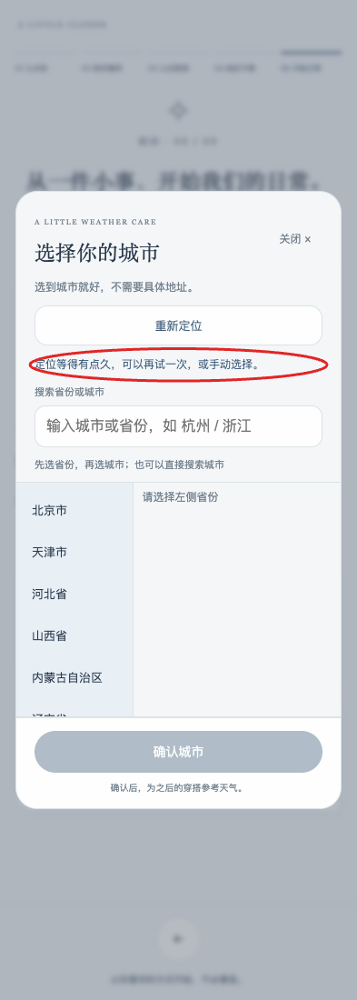
验证脚本：scripts/capture_onboarding_location_states.cjs。未点击零定位、确认前不保存、确认后回显及拒绝／超时分支检查通过；无业务代码变更。
2026-11-04 · 本地已实现；先拍前图登记，再修改。名字留空或纯空格默认衣衣，有值使用去首尾空格后的自定义名字，角色仍必选。
输入框提示「衣衣（留空使用默认名字）」；显示及保存使用相同有效名。空／纯空格／自定义名模拟页面检查通过，覆盖继续、角色必选、署名、保存字段及失败保留草稿；无真实账号保存。
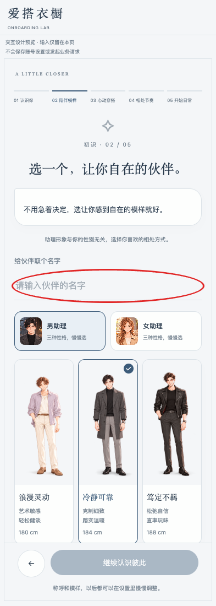
2026-11-04 · 本地已实现。先拍四组前图并登记，再替换、补后图及位置清单。
已完成19个H5文件、90处文案替换，包含无障碍与相关预览；不改已保存昵称或历史消息，历史图片不重绘。默认名、定位和四组截图流程模拟通过。
| 位置 | 修改前 | 修改后 |
|---|---|---|
| Onboarding第二步标题 | 选一个，让你自在的伙伴。 | 选一个，让你自在的助理。 |
| Onboarding名字标签 | 给伙伴取个名字 | 给助理取个名字 |
| 设置入口说明 | 你的称呼与性别 · 伙伴名字与模样 | 你的称呼与性别 · 助理名字与模样 |
| 首页空态 | 这一页还空着，先和伙伴聊聊想穿什么吧。 | 这一页还空着，先和助理聊聊想穿什么吧。 |
| 搭配服务入口 | 和伙伴聊聊搭配 | 和助理聊聊搭配 |
| 称呼与形象说明 | 你的称呼，伙伴的模样，都由你来决定。 | 你的称呼，助理的模样，都由你来决定。 |
| 资料读取失败 | 暂时没能读取伙伴资料，请稍后重试。 | 暂时没能读取助理资料，请稍后重试。 |
| Agent欢迎语 | 你的日常搭配小伙伴／日常搭配伙伴 | 你的日常搭配助理 |
| 头像与小笺无障碍 | 搭配伙伴／我的日常与伙伴小笺 | 搭配助理／我的日常与助理小笺 |
| 首次使用预览 | 预览伙伴／伙伴的名字／跟随伙伴／男伙伴／女伙伴 | 预览助理／助理的名字／跟随助理／男助理／女助理 |
| 文件 | 位置 | 处数 |
|---|---|---|
| stylist/static/agent-comparison.html | Agent对比页说明 | 1 |
| stylist/static/index.html | 独立Agent欢迎语 | 1 |
| stylist/static/design-overview.html | 设计总览与人物说明 | 5 |
| stylist/static/system-color-study.html | 系统色对照中的内嵌快照文案 | 4 |
| stylist/static/companion-strategy.html | 陪伴方案说明 | 6 |
| stylist/static/appearance.js | 男女主题欢迎语 | 2 |
| stylist/static/companion-settings.js | 称呼形象说明及校验提示 | 2 |
| stylist/static/companion-preview.html | 角色预览说明 | 2 |
| stylist/static/closet-app/yijian.js | 个人中心小笺及头像无障碍名称 | 3 |
| stylist/static/closet-app/agent-fragment.html | App内嵌Agent欢迎语 | 1 |
| stylist/static/closet-app/first-run.js | 首次资料读取失败提示 | 1 |
| stylist/static/closet-app/app.js | 首页空态、设置说明、搭配入口 | 3 |
| stylist/static/closet-app/first-visit/index.html | 首次使用预览设置标签 | 3 |
| stylist/static/closet-app/first-visit/app.js | 男女助理选项及头像说明 | 4 |
| stylist/static/closet-app/comparison/index.html | 登录引导与版本对照说明 | 29 |
| stylist/static/closet-app/comparison/evolution/index.html | 产品演进对照文案 | 17 |
| stylist/static/closet-app/onboarding/index.html | Onboarding流程概述 | 1 |
| stylist/static/closet-app/onboarding/legacy.js | 旧引导演示角色文案 | 1 |
| stylist/static/closet-app/onboarding/app.js | Onboarding标题、名字标签、演示反馈及校验 | 4 |
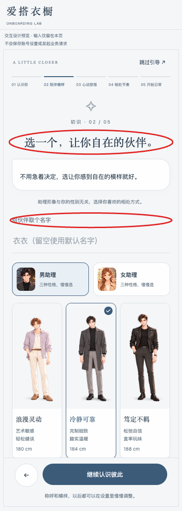
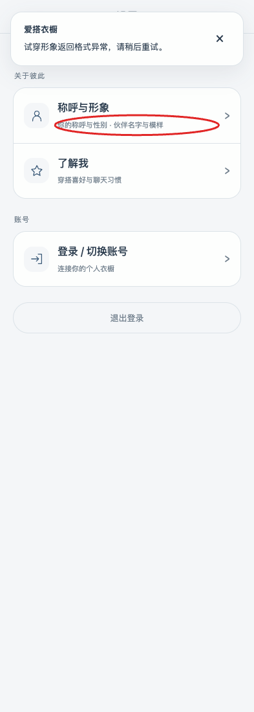
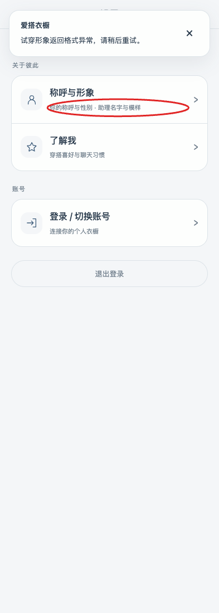
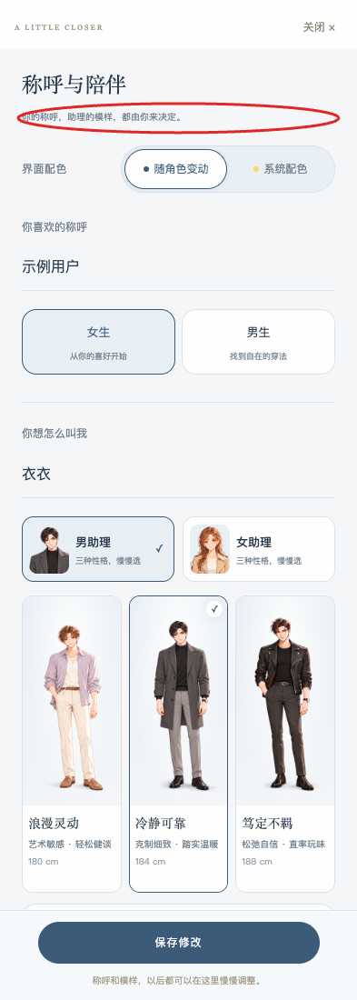
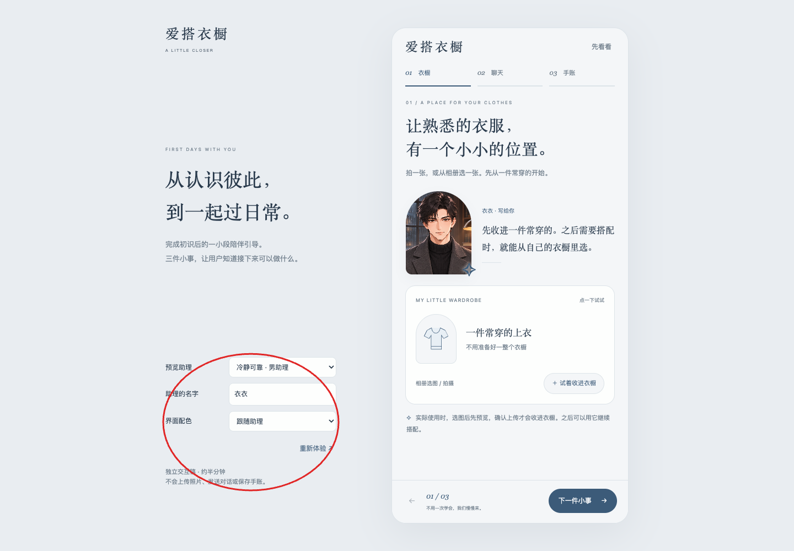
2026-11-04 · 本地已实现；先拍前图登记，再改提示并补男女后图。男助理：名字先空着，就叫我衣衣。女助理：留白也好，先叫我衣衣吧。默认名逻辑不变。
验证：男女分组即时切换、与用户性别独立、320／393px提示完整显示及切组保留自定义名通过；空值／纯空格／自定义名模拟保存回归通过。
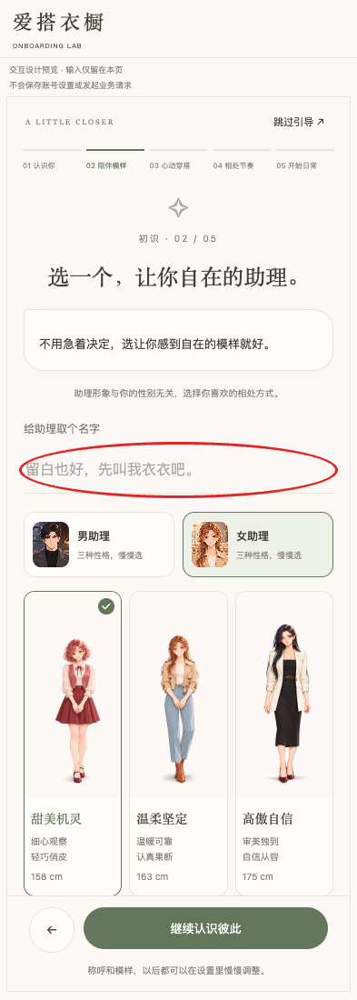
已同步清理正文顶部遗留8px margin，正文margin为0，卡片padding保留；320／393／1440px检查通过。
2026-11-04 · 本地已实现
修改前：卡片顶部展示「衣衣的小笺」署名，下方为两句欢迎正文。
修改后：只删除署名small元素，卡片及「很高兴，在这里遇见你。你的喜欢，我想慢慢了解。」正文保留，其他内容不变。
正式App和独立预览共用模板。320／393／1440px卡片保留、署名移除，验证码切换及顶部返回保留号码检查通过，业务请求0次。
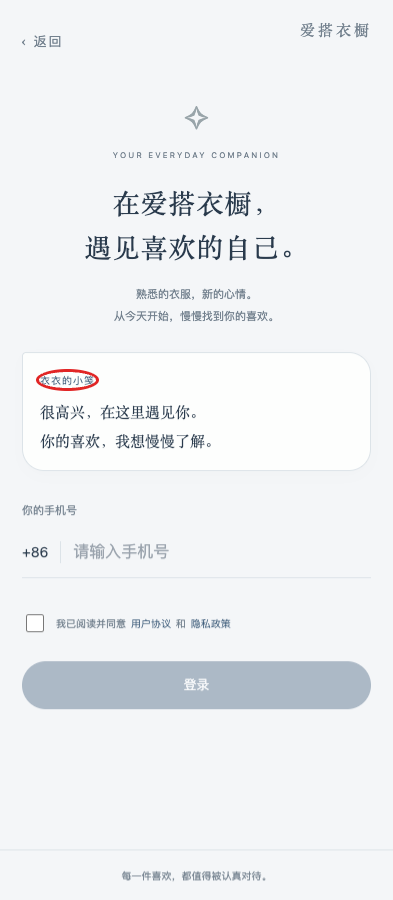
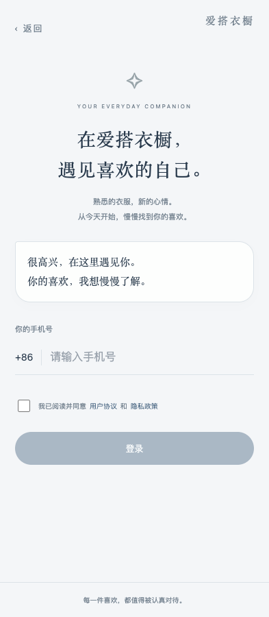
2026-11-04 · 本地已实现。先截前图登记，再移除偏技术说明，改为「用一个小小的确认，开启我们的初见。」；不变更验证码获取与校验。
Chrome正式App验证码页进入与文案核对通过，业务请求0次，无真实短信或登录。
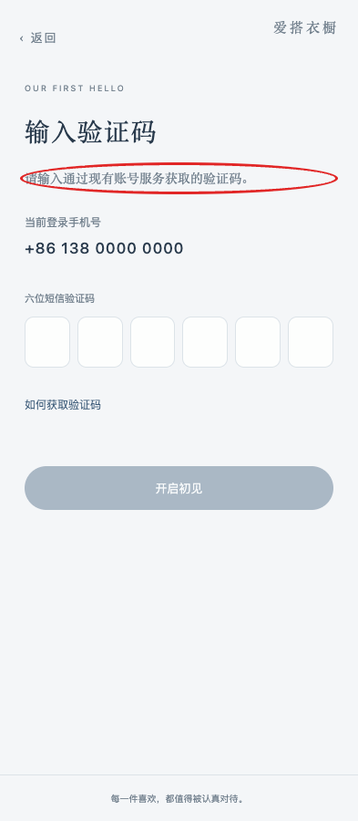
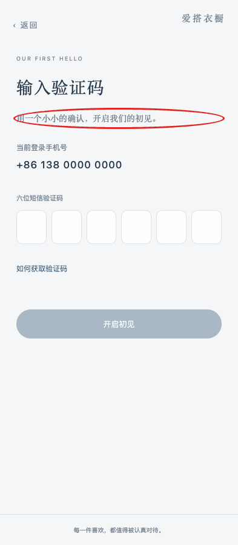
2026-11-04 · 本地已实现。先拍前图登记，再改文案；调整为「慢慢聊，按你的喜欢来。」
App内嵌与独立Agent模板同步。320／393／1440px无横向溢出，未产生对话请求。
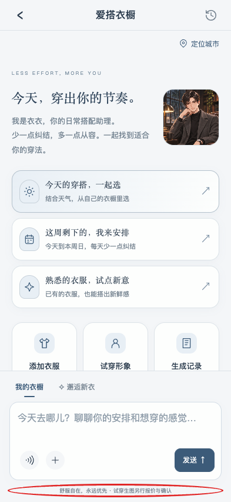
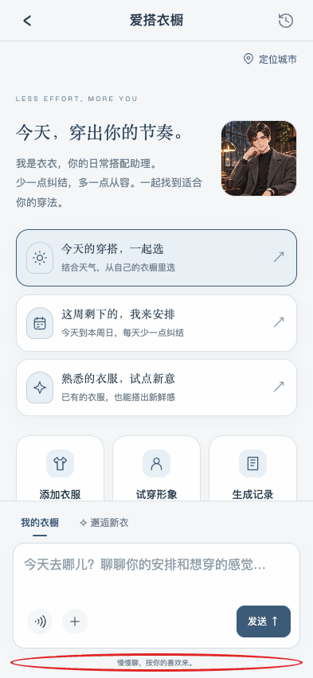
2026-11-04 · 本地已实现；先拍前图登记，再修改及补后图。前两步始终不展示跳过，第三、四步保留。
已实现。前两步即使资料完整或从后续返回也不显示跳过，提前调用进入操作也不会保存；第三步起可选入口保留。正式模式模拟／独立预览、返回守卫及三尺寸检查通过，默认名字回归通过。
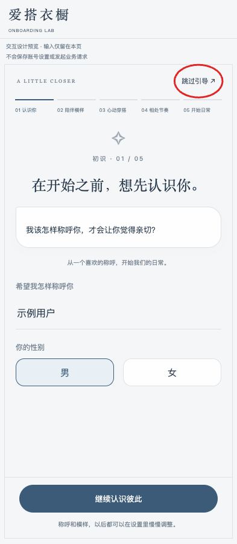
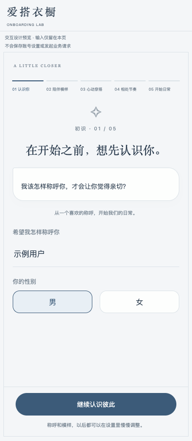
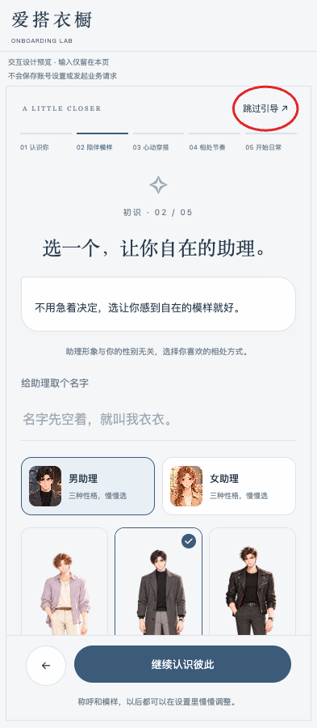
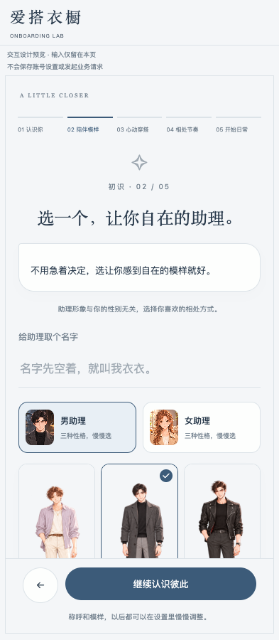
2026-11-04 · 本地已实现
位置：登录页 .login-letter p、Onboarding .closer-dialogue p。
修改前：移除署名后，正文仍有 margin: 8px 0 0，顶部多一层空白。
修改后：正文统一 margin: 0，上下留白由原卡片 padding 控制；卡片、正文与其他布局保留。
320／393／1440px计算样式为0且无横向溢出；前后截图已核对。前图红圈标注正文区域。
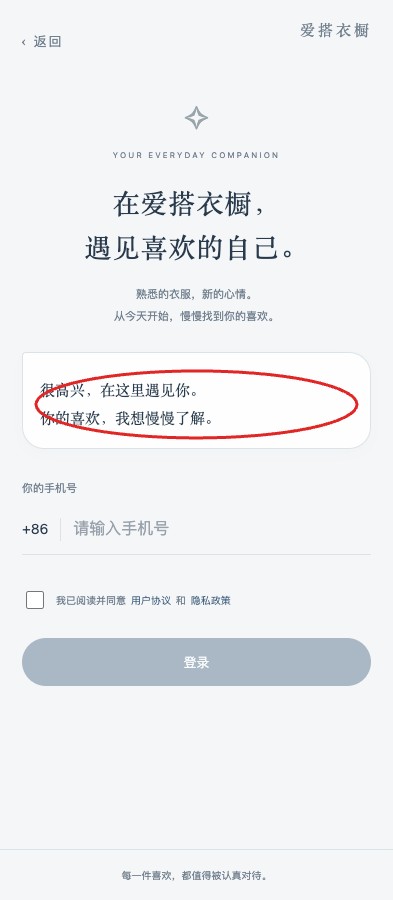
2026-11-04 · 本地已实现
Onboarding与设置都按用户本人性别显示，与助理及主题独立。男性、女性各五项，均最多选三项；八种风格保留，各自使用男装／女装图。
| 用户性别 | 显示的五项 |
|---|---|
| 男 | 舒适自在、方便走动、容易打理、合身自然、适合场合 |
| 女 | 轻松舒适、显瘦遮肉、职业干练、温柔甜美、活力阳光 |
女性只显示女性五项，不再叠加男性标签。Agent由服务端标明用户性别类型与标签适用范围，当前明确对象优先，不把另一组隐藏标签作为有效偏好；不自动擦除已存资料。未知性别不猜类型。
Python71项、偏好前端5项及Chrome两用户／相反助理／各五项／上限／性别刷新／三尺寸模拟通过。无真实账号保存或文字模型验收。
1254×1254，4列4行。当前界面使用八种风格及男性五项对应图。
1122×1402，4列5行。当前界面使用八种风格及女性五项，其余图格保留为源素材，不展示为额外标签。
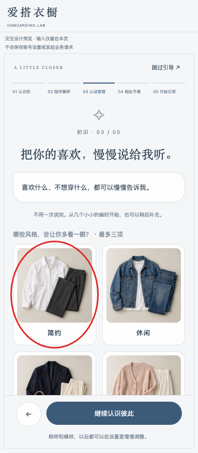
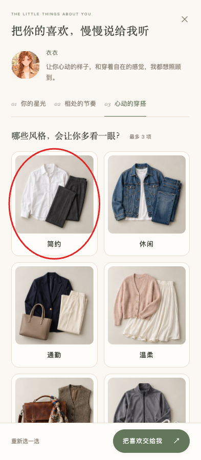
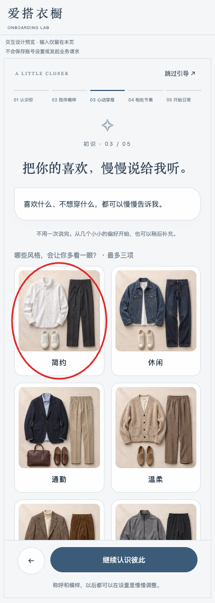
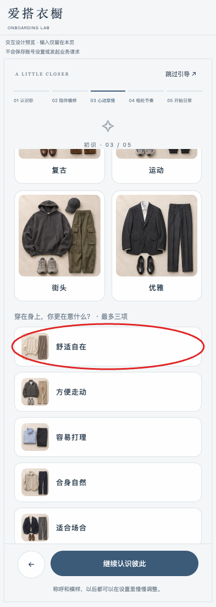
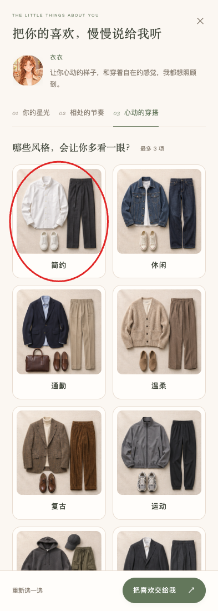
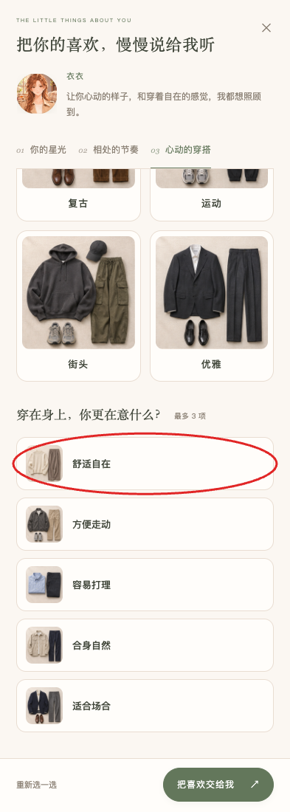
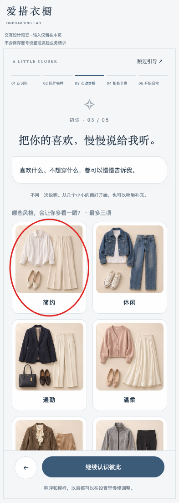
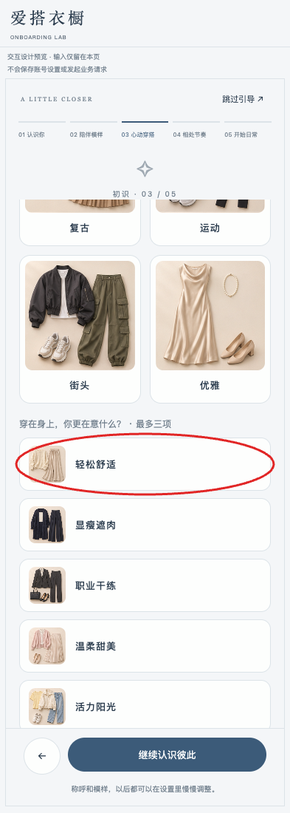
2026-11-04 · 本地已实现
先截前图登记，再接入。底部不再读600条预制文案的invitation；无城市时按当前六角色显示一句穿搭提示，有城市且登录后调用既有带身份天气接口，仅一行「城市 · 天气 · 温度」，不加第二行提醒。
按上海当天显示预报及最低／最高温，不冒充实时观测；十分钟本页账号／城市／日期隔离缓存，换城市与换号丢弃迟到响应。失败显示「城市 · 天气暂未取到」，不编造天气。不自动定位、发对话，签到仍靠右。
六角色提示、当日接口契约、单行三要素、缓存／失败／迟到／隔离与三尺寸对齐模拟通过。天气截图为模拟数据，非真实GPS或气象接口验收。